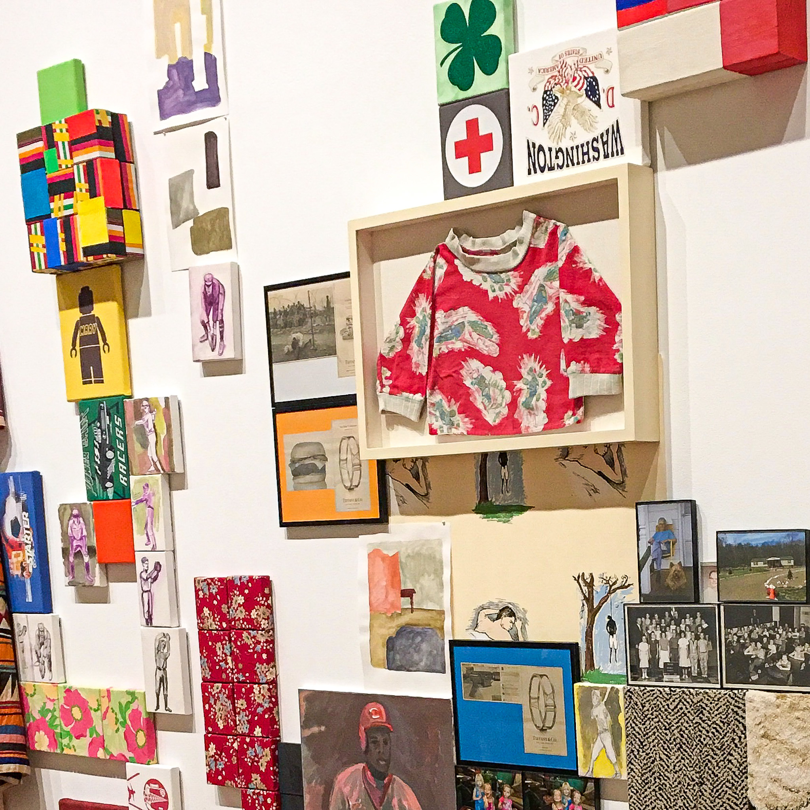
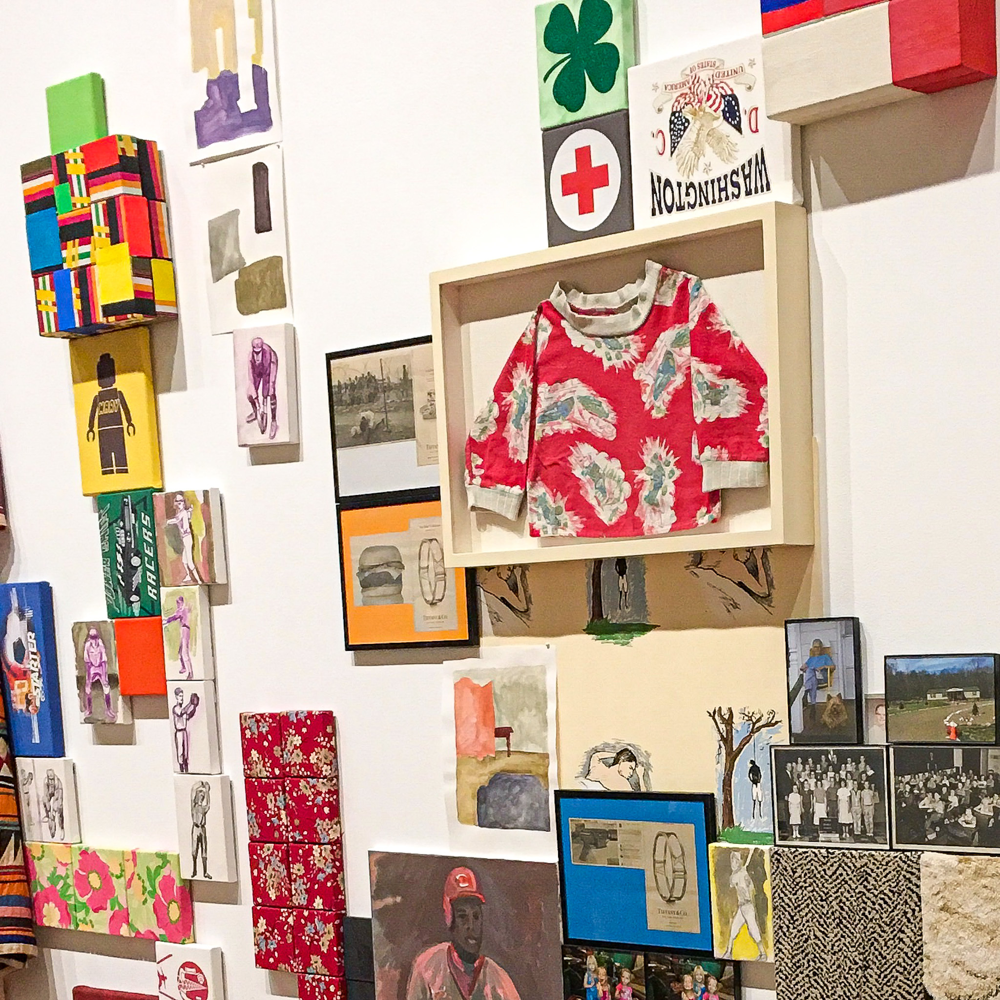

Sunny Escalante
This is Sunny Escalante’s website, and this is a copy of her information and life. She is currently a student at the University of California, Riverside.
Being introduced to Theater Arts and Digital Arts at a young age, she decided to major in Theater, Film, and Digital Production (TFDP). She has explored many different paths related to arts such as digital drawing and designing, dancing, filming, editing, scripting, creative writing, theater, stage management, and photography. By experimenting on different paths, she gained experience in different fields making her able to decide the right path for herself. At the moment, Sunny is interested in Japanese Films and Literature for its use of capturing Japanese society and culture. The first film and book that introduced her to Japanese Film and Literature was Battle Royale, a book/film that showcases economic decline, violence, discontent with the school system pressure, and the social structure breakdown in Japan. Japanese Cinematography amazed her for how intricate and beautiful the films have portrayed many events and situations that teach everyone important aspects of the culture. These films influence and inspire some of her ideas and films she wants to develop in the future that showcase her culture and history of her country. She’s also has a great interest in filming documentaries involving sex work and human trafficking in Latin America, Africa, and Asia. She finds any taboo topic interesting. Sunny considers herself a feminist and hopes to expose the issues of mainstream feminism through film by showing how equality should be. She’s a student that enjoys learning about new topics and will try her best to always find a good position on how to showcase the topic to the audience.
Sunny’s life does not only involve around the arts, but her interests are also diverse. In middle school, she joined the Mathematical Engineering Science Achievement (MESA). In her club, she was able to participate in MESA day in the prosthetic arm challenge where her group won third place sending them to regionals. However, one of her partners forgot to do their part resulting in their disqualification. During high school, Sunny was disappointed of not seeing MESA in any of the booths in the club rush. For this reason, Sunny submitted paperwork to create a MESA club at her high school. Unfortunately, the paperwork was rejected because there were only two students in the club failing to meet the requirement of number of members. She later joined Key Club to help in her community. She helped mostly in elementary school after school events giving out snacks to the parents and also arranging teachers’ rooms to make them look cleaner. The next year, Sunny joined Heal the Bay as a member helping new volunteers know the basics and giving them tips on how to distinguish the right items they will collect on the beach. She decided to join Heal the Bay for her love for the beach and after watching a documentary on the effects of plastic on the ocean. Overall, Sunny enjoys doing many different things and loves to learn new things.
Experience
Teaching Assistant
• Assisted a Algebra 2 teacher
• Graded exams and assignments
• Made quizzes
• Tutored students
Education
UC Riverside
Portfolio


